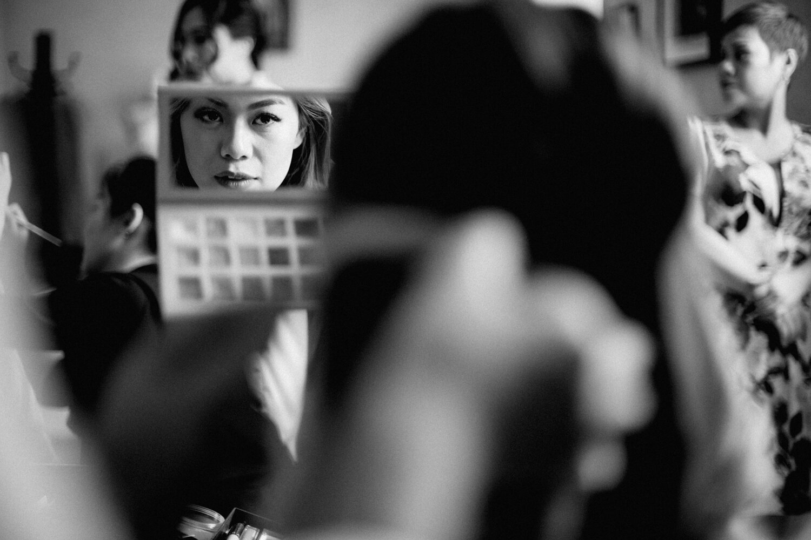

KHI NÀO NÊN CHUYỂN SANG DÙNG ẢNH ĐEN TRẮNG
Trong một bộ album , hiển nhiên hình màu vẫn nhiều hơn đen trắng, bản thân mình cũng thích những tông màu trầm, phong phú mang lại chiều sâu lẫn cảm xúc cho bức hình.
TUY NHIÊN, vẫn có những lý do rất thuyết phục để chọn màu đen trắng thay vì ảnh màu sắc. Dưới đây mình liệt kê vài lý do điển hình.
1. Không thể làm màu vì ánh sáng xấu
Đây là lý do không được chính đáng lắm để chuyển sang màu đen trắng nhưng nó cũng hợp lí phết nhờ!. Nhưng đúng thành thật mà nói thì thỉnh thoảng mình chuyển đổi sang đen trắng đơn giản chỉ vì hình đó để màu xấu quá :> Nó sẽ tiết kiệm nhiều thời gian chỉnh sửa hơn nếu bạn thích đen trắng.

Tấm này mình chụp mèo nhà mình lúc giữa trưa, nắng khá gắt làm màu chênh lệch sáng quá rõ, nhưng khi chuyển qua BW kết quả rất là khả quan.
2. Ảnh trông hoài niệm hơn.
Có một sự hoài niệm vượt thời gian với ảnh đen trắng mà ảnh màu không bao giờ có thể mang lại được, chắc ai cũng đồng ý với điều này. Chuyển sang BW làm cho bức ảnh trông “có vẻ“ như được chụp trong quá khứ cũ kĩ nào đó chứ không phải thời hiện tại. Hợp với ai theo đuổi phong cách vintage, retro, chụp thiên nhiều về cảm xúc.
3. Muốn nhấn mạnh các chi tiết
Ảnh đen trắng có thể nhấn mạnh các chi tiết như khuôn mặt, ngón tay, ánh mắt ..vv. Nó có độ tương phản cao hơn là sử dụng màu. Mình thường có xu hướng chuyển qua đen trắng khi chụp những chi tiết nhỏ, cử chỉ, ngón tay, lọn tóc mỏng manh...

4. Làm giảm thiểu sự phân tâm trong bức hình nữa.
Bình thường mình sẽ chuyển từ màu sang đen trắng vì màu sắc trong bức hình sẽ làm mình mất tập trung vào chủ thể hoặc cái mình muốn nhấn mạnh. Các yếu tố đầy màu sắc của tiền cảnh lẫn hậu cảnh đôi khi không được như mình muốn, quá loè loẹt, quá rối thì giải pháp chuyển qua đen trắng vẫn hữu dụng nhất.
Đó là mấy lý do mình thấy được thiếu sót gì mọi người comment bên dưới cho mình bổ sung nhé.
Leave a Comment
Comments